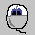
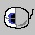
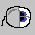
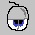
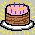
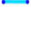

Portal
Other graphics (incomplete)
Use the arrow keys to move
Push the
to the
This is a hole. You cannot jump over it.
However, you can shoot a portal over it with A or D. Push the cake through the portal!
Your portals will
bounce off
     